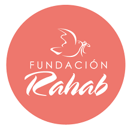

Esta es una fundación que se encarga de luchar en contra de la trata de personas y el comercio sexual y creo el 12 de noviembre de 1997
Esta fundación brinda atención integral en distintas redes de apoyo, educación, salud, capacitación laboral, asesoría lega, atención psicología, entre otros.
Estos servicios son brindados a las personas afectadas y a sus familiares.
Facilitar cambios dignificantes en la calidad de vida e personas que han estado vinculados con la trata de personas y el comercio sexual.
Ser una organización modelo que marca la pauta a nivel mundial a implementar una atención integral especializada a las personas victimas d trata de personas y y comercio sexual
 Más información
Esta fundación trabaja en comunidades urbanas, marginales con el fin de dar alimentación, apoyo académico y atención psicológica, para la promoción de igualdad en niños de escasos recursos.
Esta fundación se creo en 1995 con un comedor y actualmente tiene 3 (mas de 600 niños y niñas) un banco de alimentación (7 organizaciones) y un programa de atención escolar (260 niños, niñas y adolescentes) con 95% de éxito escolar esta fundación no solo les brinda alimentación si no también educación, valores y consciencia espiritual.
Brindar atención a los niños, niñas y adolescentes trujillanos para contribuir de modo integrales todas sus etapa de desarrollo.
Un funcionamiento de larga trayectoria; que brinde atención integral para niños , niñas y adolescentes, líder y modelo comprometido y apoyado por su apoyo en la ley orgánica para la protección de niños, niñas y adolescentes
Esta fundación se encarga de acompañar y dar una mejor calidad de vida a los pacientes de cáncer, durante y después de su tratamiento, realizan un apoyo voluntario en relación con las instituciones del estado.
Una de las ayudas que han realizado esta fundación seria dar sillas de ruedas a niños y niños en pobreza básica o extrema de los hospitales que las necesiten para movilizarse ya sean prestada o donada
Esta fundación revisa las sillas cada año y de ser necesario las cambia
Más información sobre este articulo
Esta empresa se crea en 1969 y fue relanzada en 2005.
Se encarga de fortalecer el lado no lucrativo de Casta Rica y a la atención de las causas que atienden las ONG
Convertir a las organizaciones sociales y a las empresas sociales, en protagonistas del desarrollo sostenible de Costa Rica.
Ser reconocidos con la plataforma que agrupa y representa organizaciones sociales y las empresas de Costa Rica, siendo referente el gobierno, las empresas y aliados globales.
Algunas fundaciones ayudadas por FOS son: fundación casas de niños, fundación conciencia verde, fundación firma, entre otros.